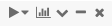

Run Databricks notebooks
Before you can run any cell in a notebook, you must attach the notebook to a cluster.
To run all the cells in a notebook, select Run All in the notebook toolbar.
Important
Do not use Run All if steps for mount and unmount are in the same notebook. It could lead to a race condition and possibly corrupt the mount points.
To run a single cell, click in the cell and press shift+enter. You can also run a subset of lines in a cell or a subset of cells. See Run selected text and Run selected cells.
To run all cells before or after a cell, use the cell actions menu  at the far right. Click and select Run All Above or Run All Below. Run All Below includes the cell you are in; Run All Above does not.
The behavior of Run All Above and Run All Below depends on the cluster that the notebook is attached to.
On a cluster running Databricks Runtime 13.3 LTS or below, cells are executed individually. If an error occurs in a cell, the execution continues with subsequent cells.
On a cluster running Databricks Runtime 14.0 or above, or on a SQL warehouse, cells are executed as a batch. Any error halts execution, and you cannot cancel the execution of individual cells. You can use the Interrupt button to stop execution of all cells.
When a notebook is running, the icon in the notebook tab changes from to . If notifications are enabled in your browser and you navigate to a different tab while a notebook is running, a notification appears when the notebook finishes.
To stop or interrupt a running notebook, select  in the notebook toolbar. You can also select Run > Interrupt execution, or use the keyboard shortcut
in the notebook toolbar. You can also select Run > Interrupt execution, or use the keyboard shortcut I I.
Schedule a notebook run
To automatically run a notebook on a regular schedule, create a notebook job.
Run a Delta Live Tables pipeline from a notebook
For information about starting a Delta Live Tables run from a notebook, see Open or run a Delta Live Tables pipeline from a notebook.
Notifications
Notifications alert you to certain events, such as which command is currently running and which commands are in error state. When your notebook is showing multiple error notifications, the first one will have a link that allows you to clear all notifications.
Notebook notifications are enabled by default. You can disable them in user settings.
Background notifications
If you start a notebook run and then navigate away from the tab or window that the notebook is running in, a notification appears when the notebook is completed. You can disable this notification in your browser settings.
Databricks Advisor
Databricks Advisor automatically analyzes commands every time they are run and displays appropriate advice in the notebooks. The advice notices provide information that can assist you in improving the performance of workloads, reducing costs, and avoiding common mistakes.
View advice
A blue box with a lightbulb icon signals that advice is available for a command. The box displays the number of distinct pieces of advice.
Click the lightbulb to expand the box and view the advice. One or more pieces of advice will become visible.
Click the Learn more link to view documentation providing more information related to the advice.
Click the Don’t show me this again link to hide the piece of advice. The advice of this type will no longer be displayed. This action can be reversed in Editor settings.
Click the lightbulb again to collapse the advice box.
Advice settings
To enable or disable Databricks Advisor, go to user settings or click the gear icon in the expanded advice box.
Toggle the Turn on Databricks Advisor option to enable or disable advice.
The Reset hidden advice link is displayed if one or more types of advice is currently hidden. Click the link to make that advice type visible again.